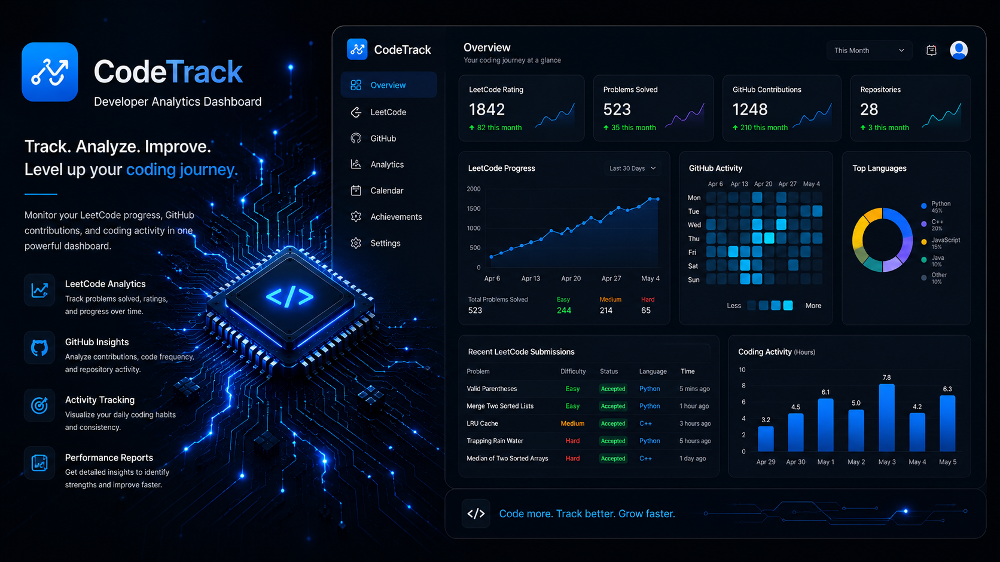

01 — Dashboard & Analytics
CodeTrack — Student Analytics Dashboard
A dashboard that tracks student coding activity across LeetCode and GitHub automatically, pulling data through usernames and profile links via API keys, then using Python to analyse and visualise performance.
HTML
CSS
JavaScript
APIs
Python